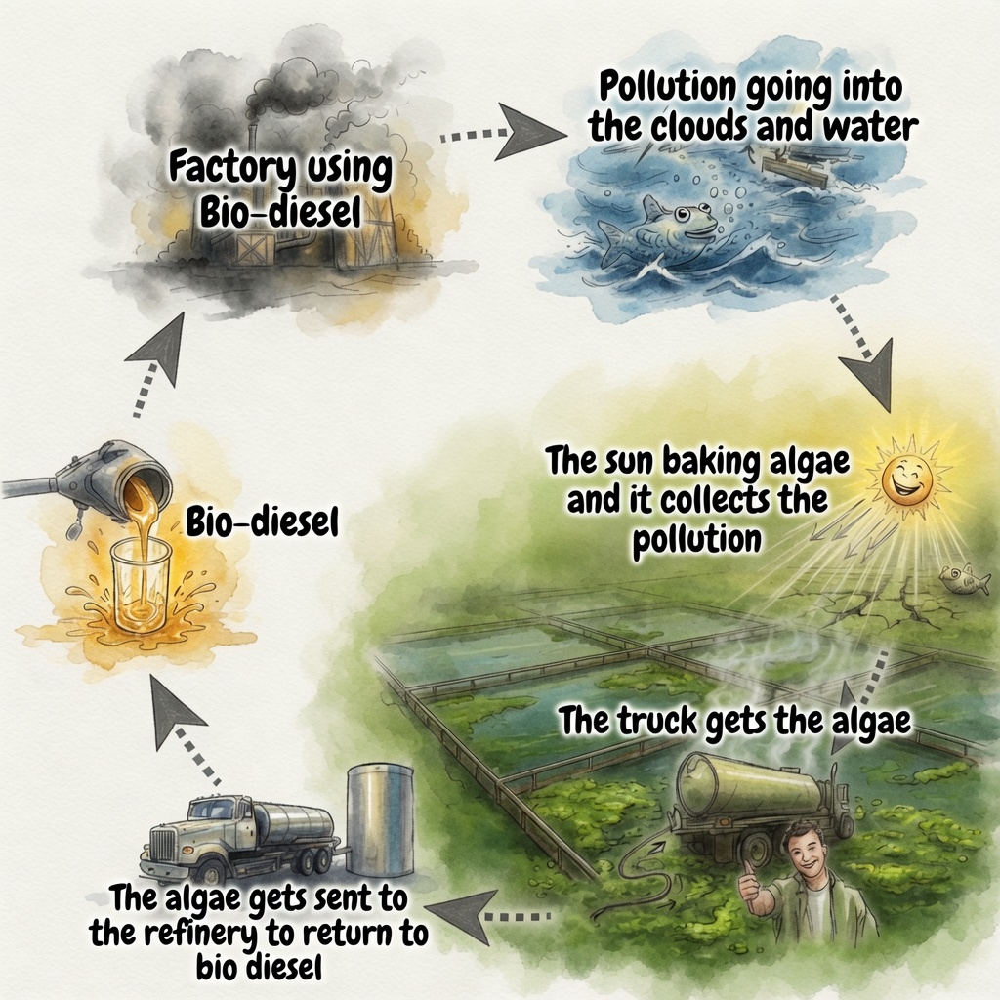
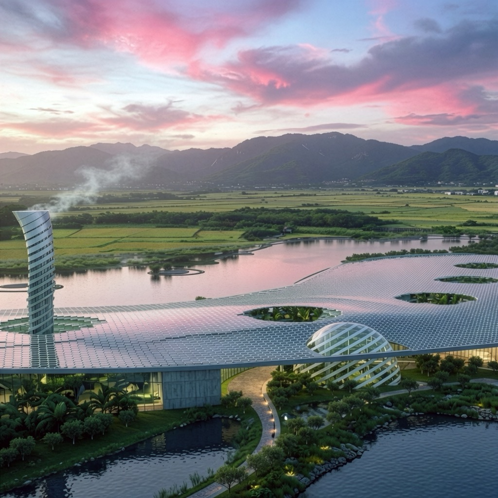
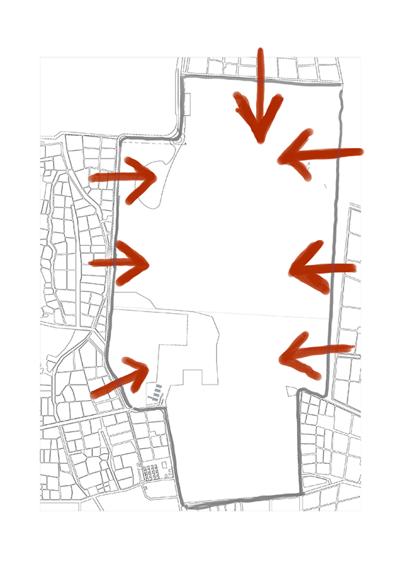
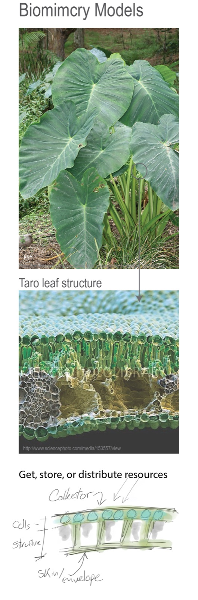
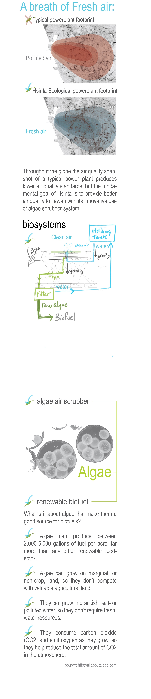
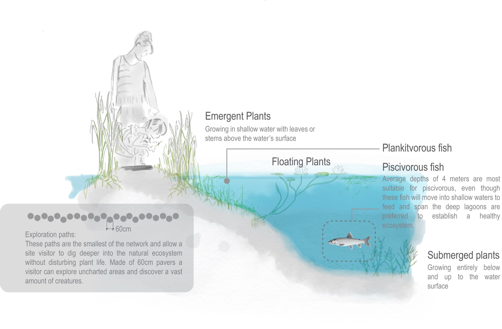
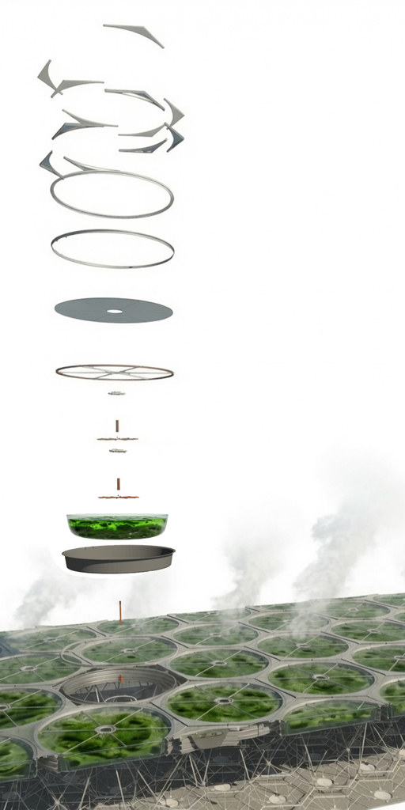
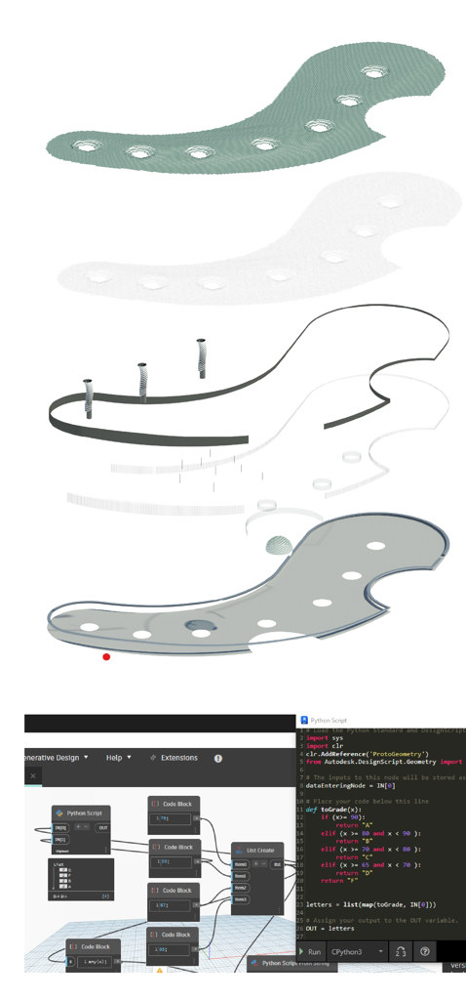

Network (the loop)
Algae as biofuel is symbiotic with the local fish farms that manage daily algae accumulation; the farms' aerators run on the electricity the plant generates, closing the loop.
← Practical AI for the built environment
A closed-loop power plant that breathes, woven into its estuary.

Hsinta reimagines the power plant as part of its ecosystem rather than an adversary to it: bio-diesel generates electricity while algae, fed by the plant, doubles as the world's largest clean-air filter and a renewable fuel source. The site is stitched into its surrounding estuary and fish farms, and a single scripted roof system of roughly 1,000 panels expresses the closed loop as one coherent, buildable surface. It was my first true generative design project, built mainly in a Revit and Dynamo ecosystem where the carpet-like roof forced a real upgrade in scripting and workflow discipline.
The role centered on translating an ecological closed-loop concept into a coherent, buildable architecture through computational design. Working mainly within a Revit and Dynamo ecosystem, the carpet-like roof of roughly 1,000 panels was driven as a single scripted system, controlling scale and repetition while keeping the surface buildable and the design intent editable. Learning Python under pressure to solve a real geometry and control problem, the work established a repeatable, script-driven workflow, with most renderings produced from the Revit environment. Completed under supervision in collaboration with a partner firm, the project secured a position among much larger firms and was showcased at the Chiang Kai-shek Memorial Hall.
Hsinta sits at the origin of the studio's method: a system-level idea (an energy and ecology loop) encoded as a controllable, scripted geometry rather than a one-off form. It is an early, headed use of computational design, where the generative roof logic stays inside the modeling environment, every step remains verifiable, and the output is structured for hand-off to a downstream team.

Algae as biofuel is symbiotic with the local fish farms that manage daily algae accumulation; the farms' aerators run on the electricity the plant generates, closing the loop.

The building responds to its site. Soil swells and the plant's curve follow the bay and surrounding fish farms, while an increased shoreline ratio boosts species diversity in the shallows.

A biomimetic outer shell, drawn from leaves and natural skins, protects the core while providing breathing and thermal control, integrated into the building rather than left exposed.

At scale, the algae system acts as the world's largest clean-air filter, cutting CO2 while producing renewable bio-fuel for Taiwan.
| Environment | Revit + Dynamo visual scripting, with Python for geometry control |
|---|---|
| Roof system | ~1,000 panels driven as a single scripted array; scale and repetition controlled, surface kept buildable |
| Renders | Produced mainly from the Revit ecosystem |
| Ecology | Lagoon depth ~4 m for piscivorous fish; 60 cm exploration pavers; increased shoreline ratio for biodiversity |
A system loop drives the form; intent lives in readable parameters.
Change a parameter and the ~1,000-panel roof regenerates as one surface.
Scripted roof and drawings feed a downstream team's documentation.


